Семейный альбом
Толя и Ира
Истории нашей семьи — в фотографиях и музыке.
Чтобы вспоминать, улыбаться и быть ближе.
Историй: 11 · Фотографий: 317


Детство и школьные годы
Первые фотографии, школьные друзья, игры и прогулки. Маленькие мгновения большого детства.
Смотреть историю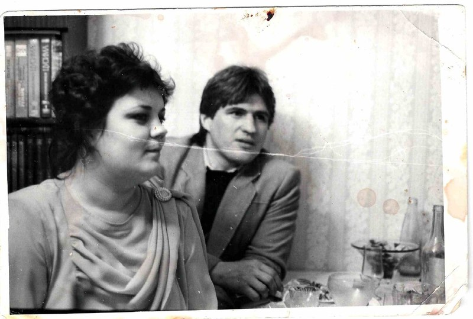
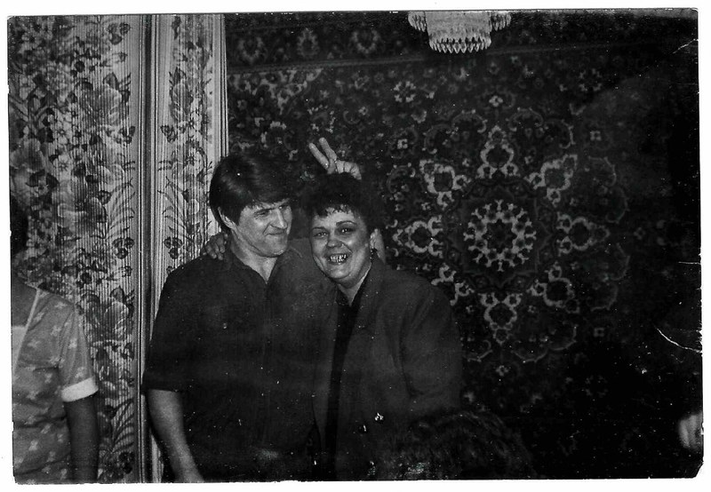
История любви
Улыбки, встречи и жизнь рядом друг с другом. Семейные фотографии под «Эхо любви».
Смотреть историю

Время друзей
Учёба, армейские будни и друзья. Встречи, песни и простые радости, которые хочется помнить.
Смотреть историю
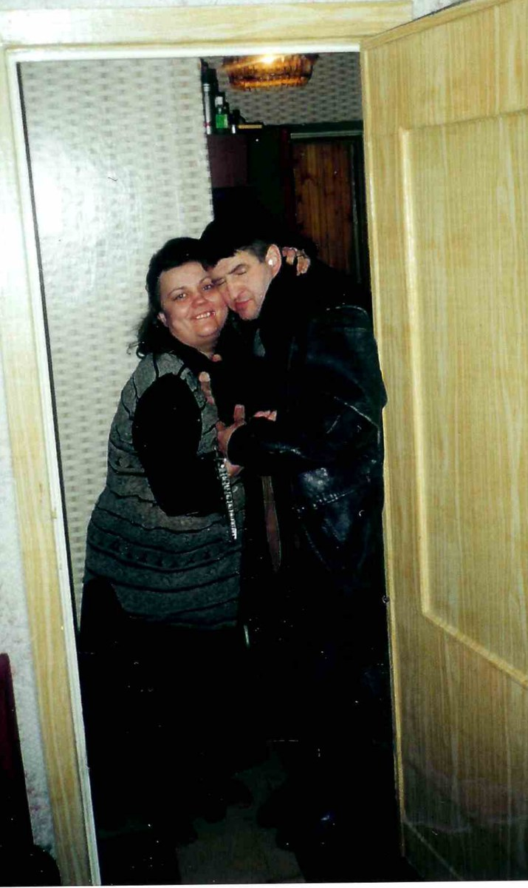
Вдвоём
Прогулки, домашние встречи и счастливые моменты рядом. Простые радости жизни вдвоём.
Смотреть историю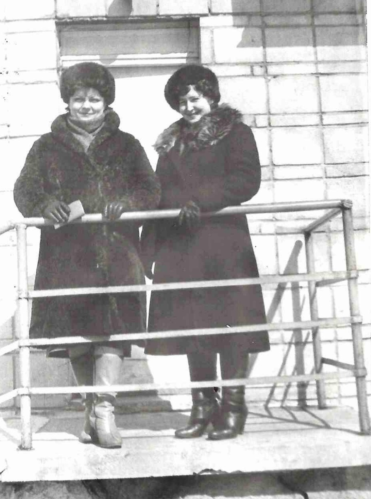
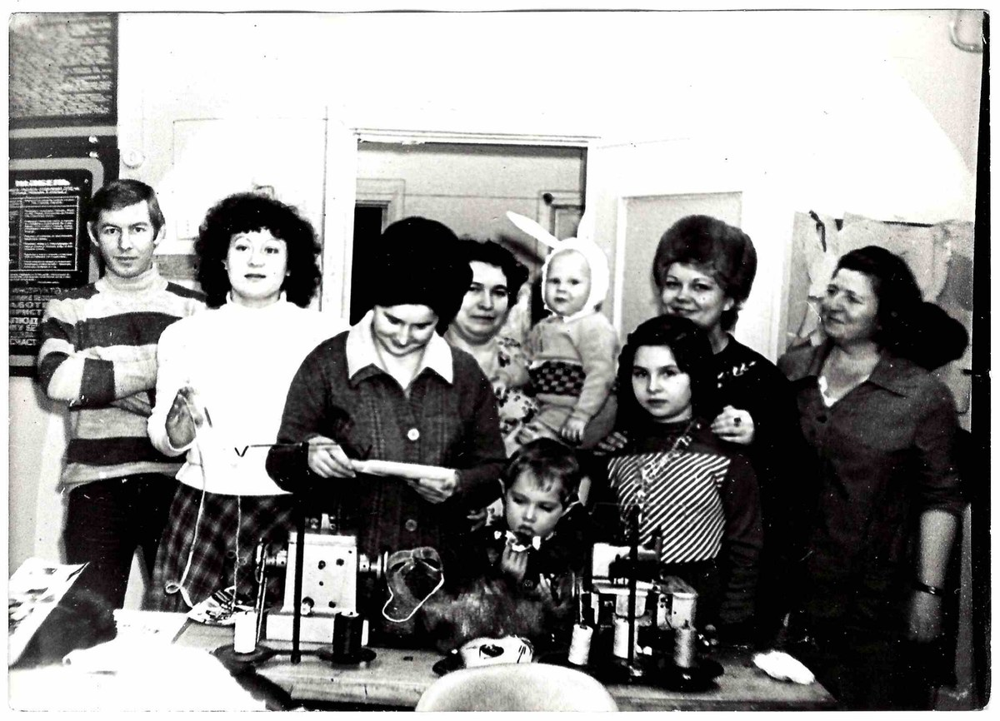
Ателье
Люди ателье: рабочие моменты, прогулки, поездки и общие праздники. Встречи и улыбки, которые хочется помнить.
Смотреть историю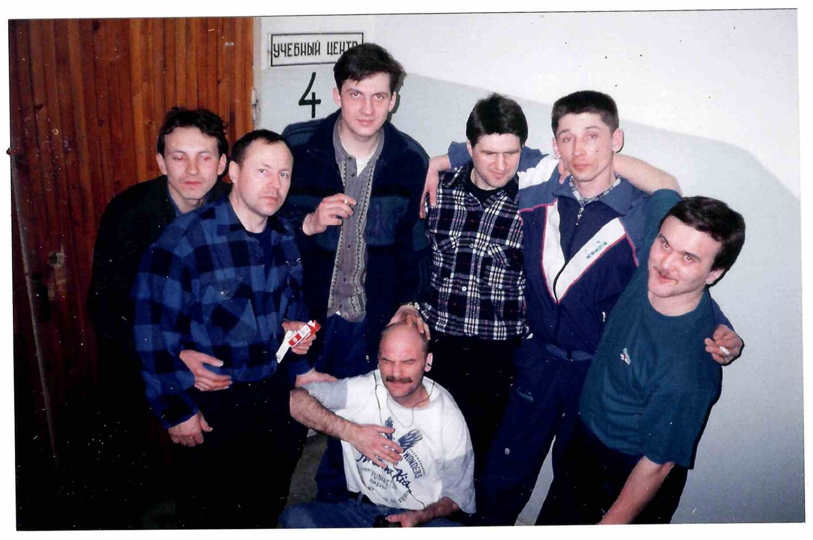
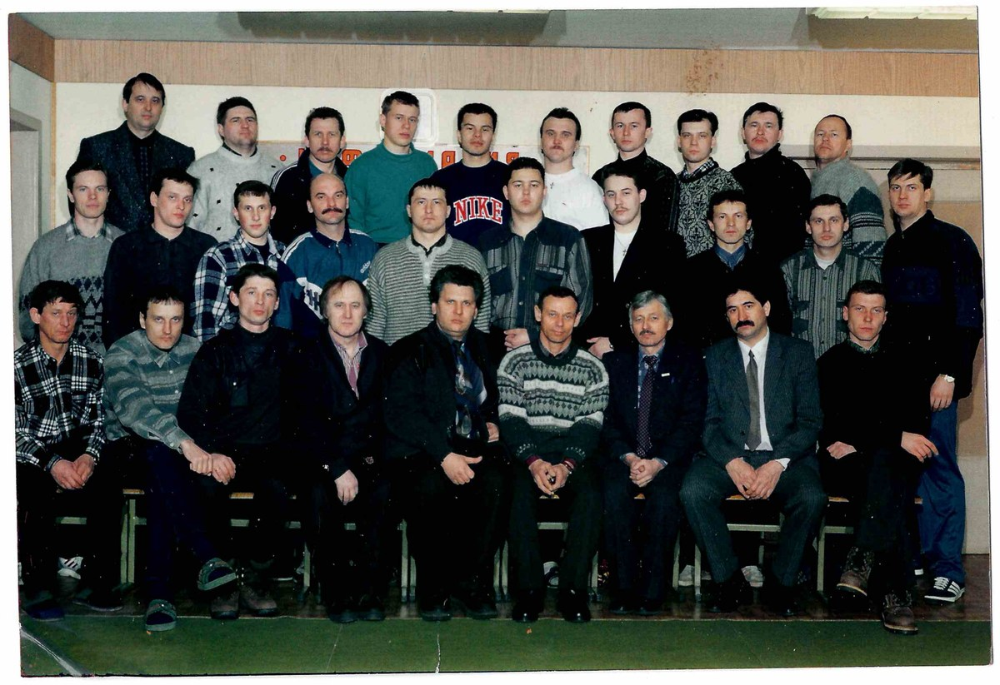
Инкассация
Общее дело, дороги, прогулки и праздники. Встречи и дружеские улыбки под «Дальнобойщика».
Смотреть историю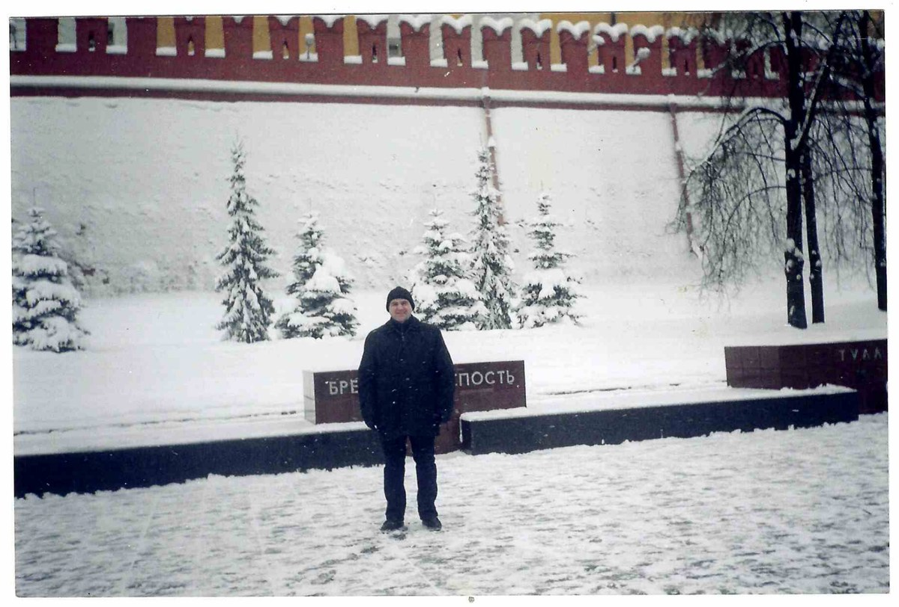
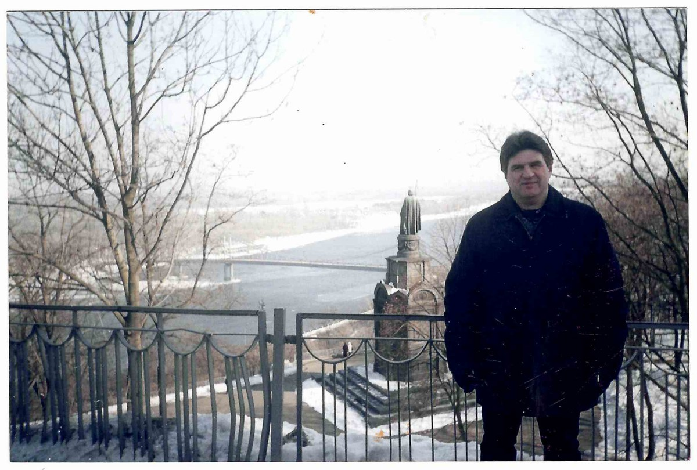
Москва, Киев
Знакомые улицы, новые впечатления и тёплые встречи. Семейные фотографии из поездок в Москву и Киев.
Смотреть историю

Родные
Домашние встречи, общие праздники и страницы старого альбома. Улыбки, объятия и тепло родного дома.
Смотреть историю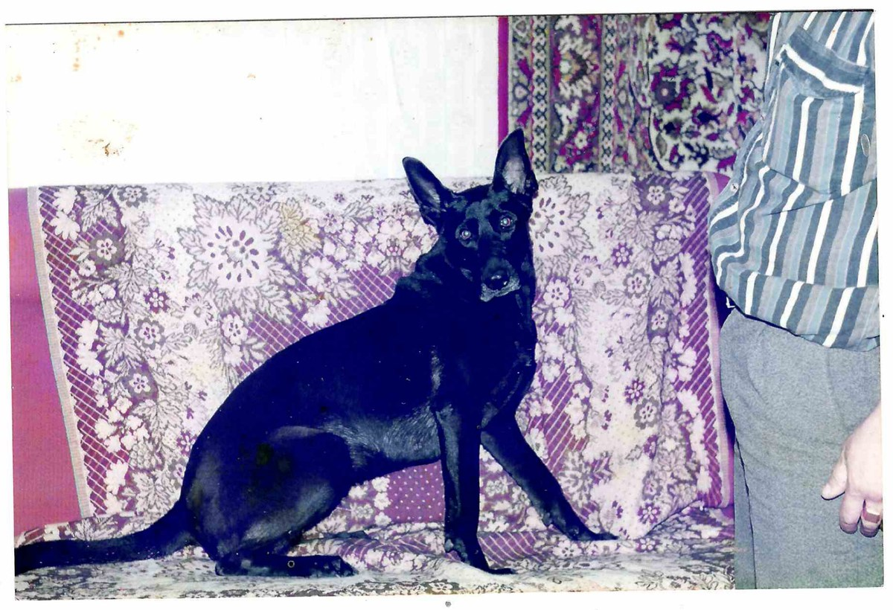
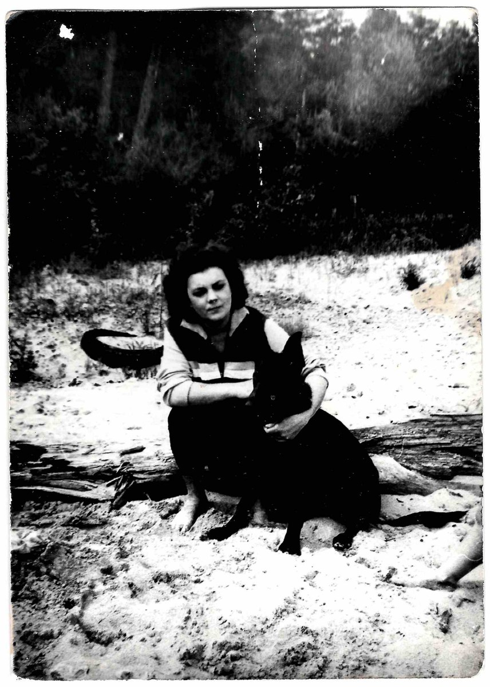
С Кальмой
Домашние привычки, купание и игры на прогулке. Маленькая история большой дружбы под «Человек собаке друг».
Смотреть историю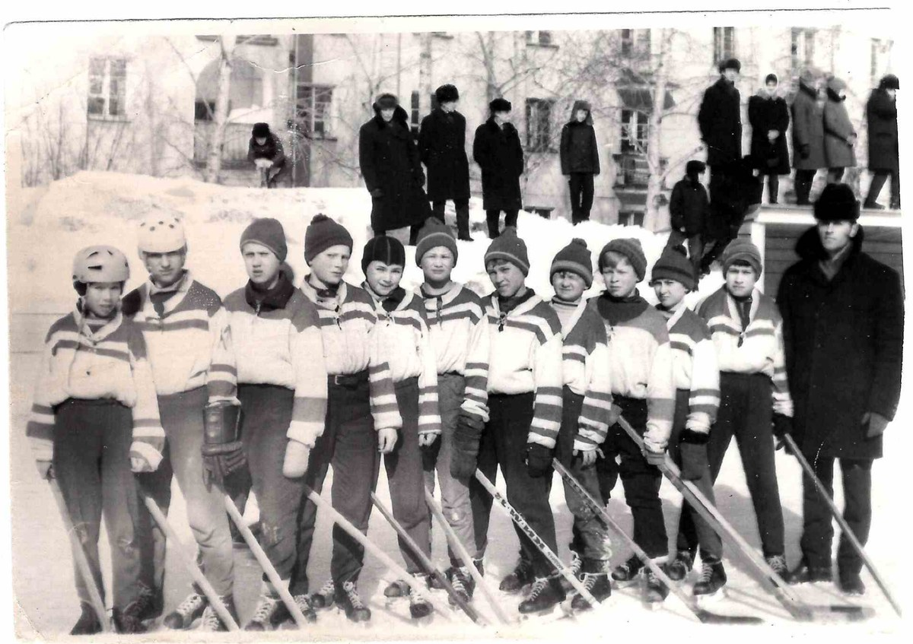
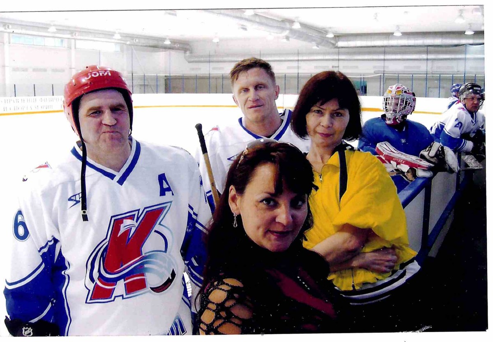
Хоккей
Любовь к хоккею, которую Виктор Трофимович передал Толе. Матчи, тренировки, командные снимки и встречи у катка.
Смотреть историю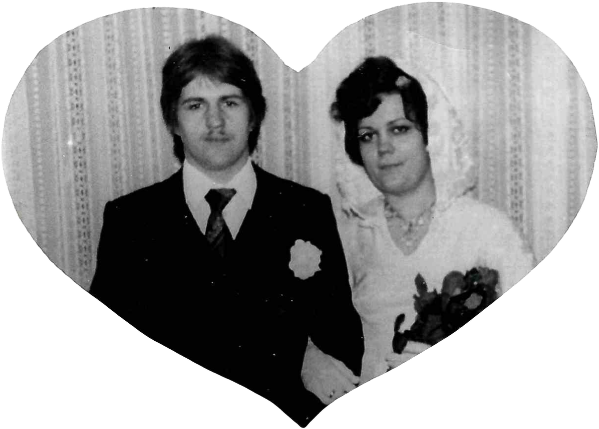

Свадьба
День свадьбы, домашний праздник спустя 25 лет — и 45 лет вместе. Под «Обручальное кольцо».
Смотреть историю